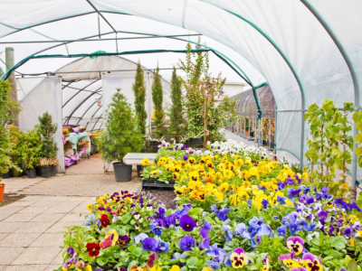
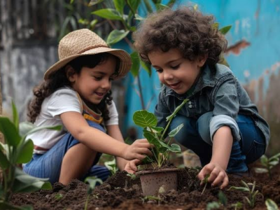

Atividades
O parque contará com duas atividades mensais e uma atividade semanal, voltadas para a criação de memórias, senso de cidadania e pertencimento, cuidado ambiental e apreciação da literatura, as atividades mensais são, infância fértil e livros da infância, já a atividade semanal é a estufa kids

